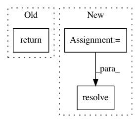

831b005905d3f3dd36269cccf9186d1ee1110858,src/python/pants/backend/python/interpreter_cache.py,PythonInterpreterCache,_resolve_and_link,#PythonInterpreterCache#Any#Any#Any#,179
Before Change
shutil.move(dist_location, target_location)
_safe_link(target_location, target_link)
self._logger(" installed {}".format(target_location))
return EggPackage(target_location)
After Change
// Since we"re resolving to bootstrap a bare interpreter, we won"t have wheel available.
// Explicitly set the precedence to avoid resolution of wheels or distillation of sdists into
// wheels.
precedence = (EggPackage, SourcePackage)
distributions = resolve(requirements=[requirement],
fetchers=self._python_repos.get_fetchers(),
interpreter=interpreter,
context=self._python_repos.get_network_context(),
precedence=precedence)
if not distributions:
return None
assert len(distributions) == 1, ("Expected exactly 1 distribution to be resolved for {}, "
In pattern: SUPERPATTERN
Frequency: 4
Non-data size: 3
Instances
Project Name: pantsbuild/pants
Commit Name: 831b005905d3f3dd36269cccf9186d1ee1110858
Time: 2015-07-24
Author: john.sirois@gmail.com
File Name: src/python/pants/backend/python/interpreter_cache.py
Class Name: PythonInterpreterCache
Method Name: _resolve_and_link
Project Name: pantsbuild/pants
Commit Name: c019f4c99ea10d8edceb46b4e0bf876ec2b9f319
Time: 2018-12-03
Author: wisechengyi@gmail.com
File Name: src/python/pants/backend/jvm/tasks/bootstrap_jvm_tools.py
Class Name: BootstrapJvmTools
Method Name: _bootstrap_classpath
Project Name: pantsbuild/pants
Commit Name: c88c53784a10d33065adb895724d76afae8289b9
Time: 2016-01-26
Author: abishev.timur@gmail.com
File Name: src/python/pants/build_graph/build_file_address_mapper.py
Class Name: BuildFileAddressMapper
Method Name: spec_to_address
Project Name: pantsbuild/pants
Commit Name: e7a5e70ca46f1d9a8e9870bec7119c35eacb5fd1
Time: 2014-03-05
Author: wickman@apache.org
File Name: src/python/twitter/pants/python/interpreter_cache.py
Class Name: PythonInterpreterCache
Method Name: interpreter_from_path